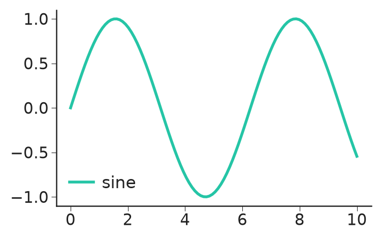
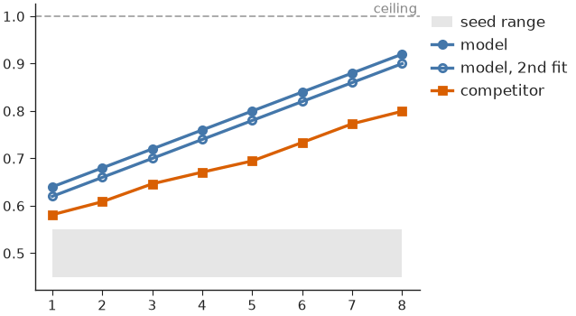

Styling & themes¶
A Theme is a frozen bundle of font sizes (in
points), line widths and colours. Fonts are physical, and so are figure sizes
(see Figures & sizing), so a figure keeps its fonts at exactly
the theme's sizes in every panel.
Setting a theme¶
set_theme() applies a theme's rcParams to matplotlib
globally and returns the resolved Theme:
import nicefigs as nf
theme = nf.set_theme("paper")
print(theme.name, theme.fs_axis_label, theme.fs_tick)
All presets derive from one base size via
Theme.from_base():
| Preset | Base size | Typical use |
|---|---|---|
"paper" (default) |
7 pt | Dense multi-panel figures |
"paper-large" |
8.5 pt | Single-panel or half-column figures |
"talk" |
13 pt | Slides |
"poster" |
20 pt | Posters |
Styling a block of code¶
style() applies a theme for the duration of a with
block and restores the previous rcParams on exit. Inside the block,
get_theme() returns that theme, so nicefigs helpers
pick up its sizes. Wrapped around plain matplotlib code, it restyles that code:
import matplotlib.pyplot as plt
import numpy as np
import nicefigs as nf
x = np.linspace(0, 10, 100)
with nf.style("talk"):
fig, ax = plt.subplots(figsize=(4, 2.5))
ax.plot(x, np.sin(x), label="sine")
ax.legend()
print(nf.get_theme().name)
print(nf.get_theme().name)

style() also takes raw rcParams overrides, e.g.
nf.style("paper", **{"axes.grid": True}).
Colours and palettes¶
The default colour cycle of every theme is NICE
("nice"): a bright teal followed by colours from David Hockney's A Bigger
Grand Canyon. qualitative() returns n colours
from a named palette, "nice" by default, cycling when n exceeds its length:
scatter() and
model_comparison() colour their groups this way.
An unknown palette name raises KeyError. When colour-blind accessibility
matters more than the house look, use one of Paul Tol's palettes:
PALETTE_BRIGHT("bright"): 7 colours.PALETTE_MUTED("muted"): 9 colours and grey, softer.PALETTE_HIGH_CONTRAST("high_contrast"): 3 colours and black, for line plots.
To make one the default cycle, build a theme with it:
nf.THEMES["paper"].with_(palette=nf.PALETTE_BRIGHT).
COLORS holds semantic colours ("primary", "accent",
"good", "bad", "neutral", "land", "ocean", "coast", …) used by
the map and plot helpers. Colormaps & palettes covers
continuous colormaps, land-cover palettes and the artist palettes.
Colouring by role¶
The role palette ROLES colours a comparison by the part
each method plays rather than by the method itself: primary (the method under
study), contrast (the competitor it is compared against), baseline
(established baselines), null (chance level or a control) and reference
(truth, ceilings, targets).
import nicefigs as nf
print(nf.role_color("primary"), nf.role_color("null", band=True))
print(sorted(nf.ROLES))
Every pair of role colours stays at least 16 apart (OKLab ΔE × 100) under normal, protan, deutan and tritan vision (Machado et al. 2009 simulation), so all five roles stay distinct for colour-blind readers.
role_style() returns keywords for ax.plot,
ax.errorbar or ax.fill_between; kind is "marker" (default), "line",
"both" or "band":
{'color': '#AAAAAA', 'zorder': 1.0, 'linestyle': 'none', 'marker': 'o', 'markeredgecolor': '#AAAAAA', 'markerfacecolor': 'none'}
{'color': '#000000', 'zorder': 1.5, 'linestyle': '--', 'linewidth': 0.6, 'marker': 'none'}
Null markers are open and drawn behind the data; reference lines are dashed at half the theme's line width. Marker size is left to the caller. Together:
import numpy as np
import nicefigs as nf
nf.set_theme("paper")
x = np.arange(1, 9)
rng = np.random.default_rng(0)
fig, ax = nf.subplots(width="half", aspect=0.75)
ax.fill_between(x, 0.45, 0.55, **nf.role_style("null", "band"), label="seed range")
ax.plot(x, 0.6 + 0.04 * x, **nf.role_style("primary", "both"), ms=3, label="model")
ax.plot(x, 0.58 + 0.04 * x, **nf.role_style("primary", "both", filled=False), ms=3, label="model, 2nd fit")
ax.plot(x, 0.55 + 0.03 * x + rng.normal(0, 0.01, 8), **nf.role_style("contrast", "both"), ms=3, label="competitor")
nf.reference_line(ax, 1.0, label="ceiling")
ax.legend(loc="upper left", bbox_to_anchor=(1, 1), frameon=False)

Methods that share a role share its colour: tell them apart by label, and give
a variant of a method the open marker (filled=False).
Note
The null grey (#AAAAAA) has 2.3:1 contrast on white, below the 3:1
needed for graphics. Label null curves directly; the grey never carries
meaning alone.
Map your methods to roles once, e.g. {"unet": "primary", "persistence":
"contrast"}, and every figure inherits the same colours.
Customising a theme¶
Theme.from_base() derives a full theme from
one base size; Theme.with_(**overrides) and Theme.scaled(factor) return
modified copies and leave the original untouched:
import nicefigs as nf
custom = nf.Theme.from_base(9.0, name="custom", lw_line=1.5)
talk_thin = nf.THEMES["talk"].with_(lw_axes=0.5)
print(custom.fs_axis_label, custom.lw_line, talk_thin.lw_axes, nf.THEMES["talk"].lw_axes)
nf.set_theme(custom)
set_theme() and style() accept a Theme wherever they accept a preset
name.